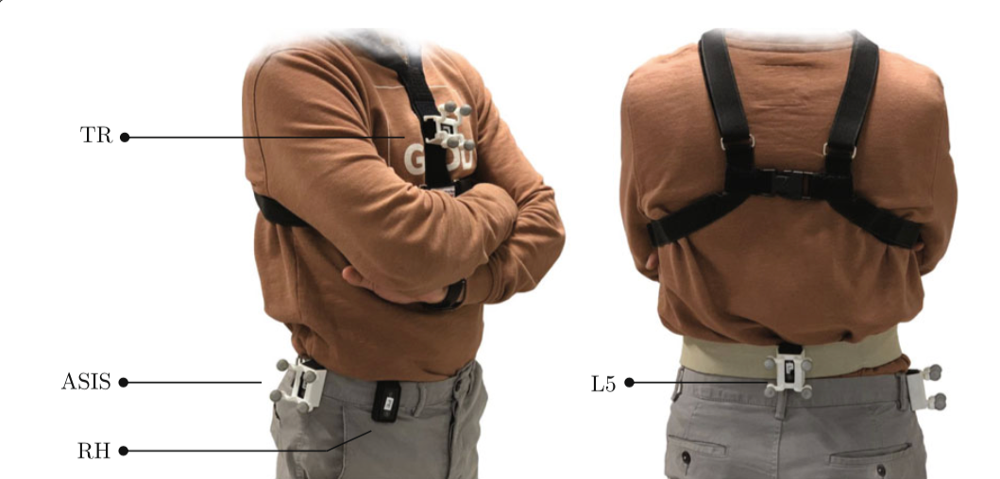
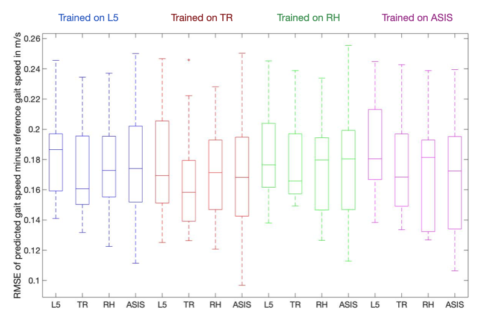

Gait speed is a powerful clinical marker for assessing mobility and predicting functional decline. Existing methods often require sensors at fixed positions, which may be impractical in real-world, home-based assessments. This project investigates the effect of sensor location around the belt on gait speed estimation and proposes a method that is independent of sensor placement.
IMU sensors were placed at four positions around the belt (sternum, hip, L5, and an arbitrary waist position). Vertical acceleration signals in the global frame were processed and features extracted. A Gaussian Process Regression (GPR) model mapped these features to gait speed.
The algorithm was validated on 15 young healthy participants performing daily-life activities. Median RMSE for predicted gait speed was below 0.2 m/s for all sensor positions, demonstrating the effectiveness of a location-independent approach.
High correlation between signals from different sensor locations confirms that gait speed can be accurately estimated with trunk sensors. The method improves user comfort compared to foot sensors and can be applied in home settings.
You can download the complete report below:
Download Full Report